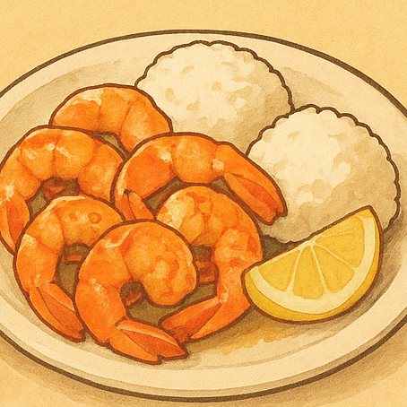

一人で海外旅行に行くのは厳しい...
だけど行ってみたい！
そんな人に安心してハワイ旅行を楽しめるガイドサイトです。
ラニカイビーチ


ノ真っ白な砂浜とエメラルドブルーの海が広がる静かなビーチ。 混雑を避けて、波音を聞きながら心をリセットするのにぴったり。


ガーリックシュリンプ
ノースショア名物のフードトラックで、 手をベタベタにしながら豪快に食べるのが楽しい。にんにくの香りが食欲をそそります。
ホノルルクッキー

パイナップル型が可愛いクッキーは、見た目も味も間違いなし。 日本へのお土産にも定番で、帰国後もハワイ気分が味わえます。